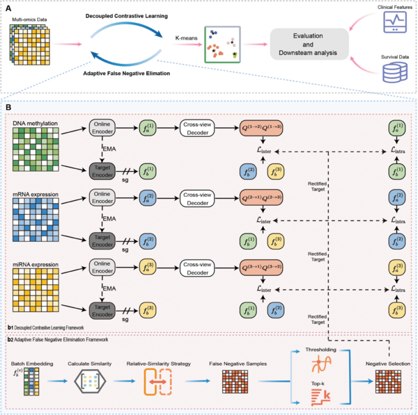

🙋🏼 About Me
Hello! I am Mengxiang Lin, an MSc graduate in Artificial Intelligence from  Zhengzhou University, under the supervision of Prof. Zhen Tian.
Zhengzhou University, under the supervision of Prof. Zhen Tian.
From August 2024 to August 2026, I was a Visiting Scholar at the Yangtze Delta Region Institute (Quzhou), University of Electronic Science and Technology of China (UESTC), conducting research at the Malab laboratory under the supervision of Prof. Quan Zou.
My research focuses on machine learning for multi-omics integration, cancer subtyping, and survival prediction. Researchers interested in collaboration are welcome to contact me at linmxdaxton@gmail.com.
🔥 News
- 2026.08: Completed my Visiting Scholar appointment at the Yangtze Delta Region Institute (Quzhou), UESTC.
- 2026.06: Completed an MSc in Artificial Intelligence at Zhengzhou University.
- 2025.12.04: Our paper on decoupled contrastive multi-view clustering was published in PLOS Computational Biology.
💰 Research Projects
- Bioinformatics Technologies and Analysis for Multi-omics Cancer Data. National Natural Science Foundation of China (NSFC) national key project; participating member.
- Knowledge Graph-enhanced Cross-view Hierarchical Graph Contrastive Learning. NSFC general program; participating member.
📝 Publications

Decoupled contrastive multi-view clustering with adaptive false negative elimination for cancer subtyping
Mengxiang Lin, Rongqi Fan, Saisai Zhu, Xiaoqiang Yan, Quan Zou, Zhen Tian
PLOS Computational Biology, 2025, 21(12): e1013780.
- DCMC integrates multi-omics data through decoupled contrastive multi-view learning.
- An adaptive false-negative elimination strategy improves the learned representations for cancer subtyping.
- The method was evaluated on ten cancer datasets against 19 existing approaches.
Manuscripts in preparation
- Availability-Aware Expert Routing with Residual Compensation for Multimodal Cancer Survival Prediction with Missing Modalities. M Lin, Q Zou, Z Tian. Experiments being finalized.
- Dual Mixture-of-Experts with Context-Aware Routing and Adaptive View Reweighting for Cancer Subtyping. M Lin, Z Dong, Q Zou, Z Tian. Experiments being finalized.
Publication image: Fig 1 from Lin et al., PLOS Computational Biology (2025), CC BY 4.0.
🎖 Awards
- 2025–2026: Second-Class Academic Scholarship, Zhengzhou University.
- 2024–2025: Second-Class Academic Scholarship, Zhengzhou University.
- 2023–2024: First-Class Academic Scholarship, Zhengzhou University.
- 2020–2021: National Scholarship, Gansu Agricultural University.
📖 Educations
- 2023.09 – 2026.06: MSc in Artificial Intelligence, Zhengzhou University.
- 2019.09 – 2023.08: Bachelor of Management in Information Management and Information Systems, Gansu Agricultural University.